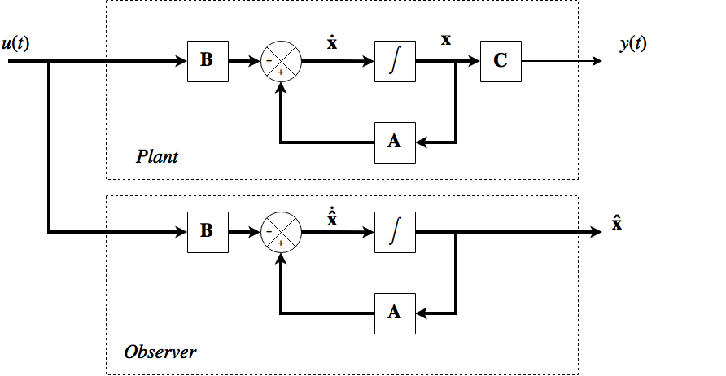
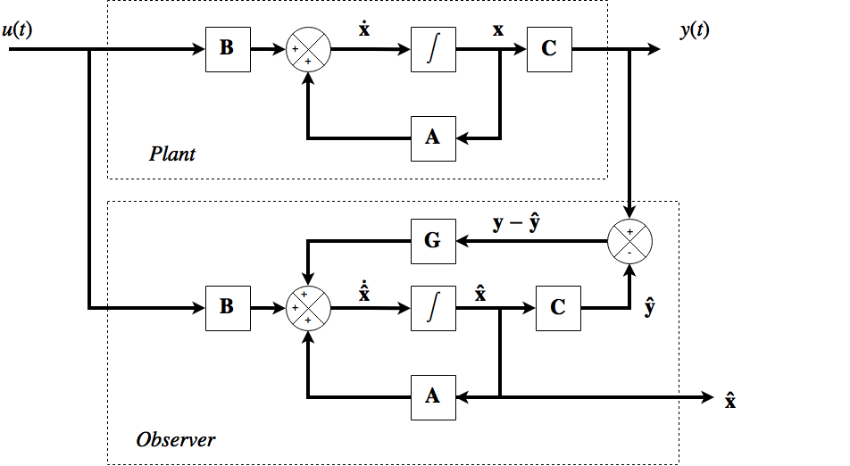
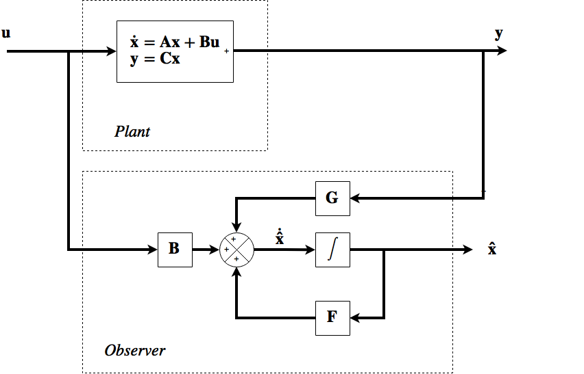
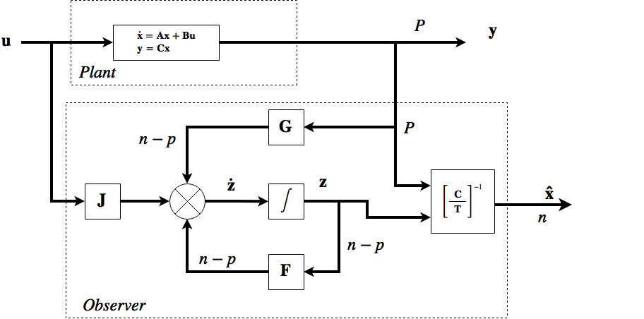
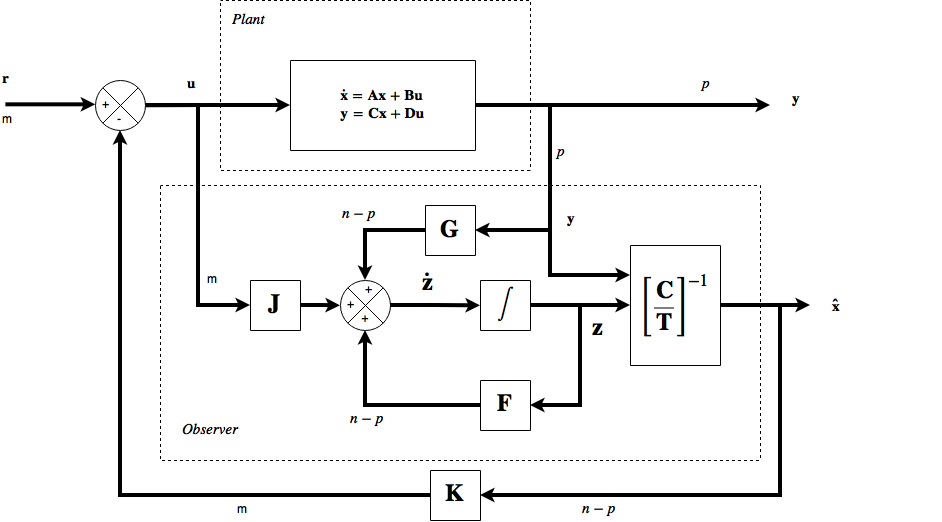
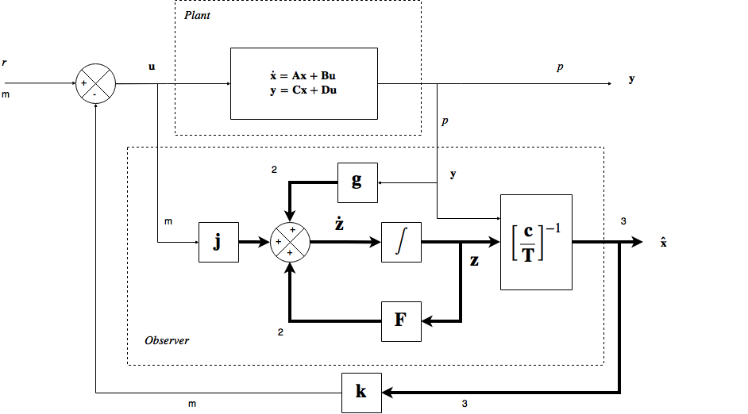
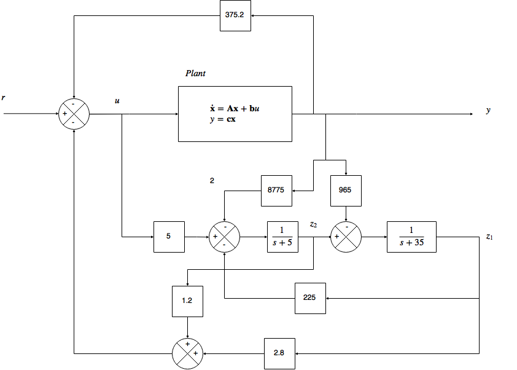

The placement of closed-loop poles (eigenvalues) of a system by use of state-variable feedback has some limitations. The state variables were assumed to be always available for feedback. There are various reasons
why they are not.
1) There will almost always be blocks in the system which are not adequetly represented by models of the first order. More than one state variable will need to be assigned to describe such a block. \(m\) state variables are needed for an \(n^{th}\) order blcok. There will likely be one or more states buried inside the block unavailable for measurement.
2) Some of the state variables may be unmeasureable.
3) It may be uneconomical to measure some state variables.
4) If a model is converted from a transfer function using methods such as direct programming then the only state variables may be the system outputs. The other states may not even correspond to physical entities.
Adequete performance can sometimes be achieved with a subset of the states. There is normally a way of resolving this issue if the system is observable, because the states can be estimated and the estimates used in the feedback scheme instead of the unmeasurable values. A system that performs state estimations is often called an observer, although they are subtly different types of system. Both systems contain a model of the plant, but the difference is that in the observer it is assumed that the states in the model behave in exactly the same way as those in the plant, while the state estimator reconstructs the best possible estimate assuming that the states are corrupted.
Simple Observers
The most simple observer assumes that the model is a continuous-time state space model. If \(\mathbf C\) is square and of full rank then the inverse exists and if the \(\mathbf D\) matrix is not present then then output equation is rearranged as
\(\mathbf x=\mathbf C^{-1}\mathbf y\)
This suggests that the state vector can be obtained directly from measurements of the plant. If the \(\mathbf D\) matrix is present then the equation is
\(\mathbf x=\mathbf C^{-1}[\mathbf y - \mathbf{Du}] \)
amd input measurements are also used. This situation for the \(\mathbf C\) matrix is quite rare however the idea of extracting information from the outputs is useful and leads to the scheme (similar to the Smith Predictor) of running a model in parallel to the plant itself and extracting the state estimations from the model

The basic principle is that the model in the diagram should supply \(\mathbf {\hat x}\) variables that follow the variables in the plant. In practice this system is unlikely to work because it is open loop.
The fact that the \(\mathbf A\) and \(\mathbf B\) matrices are only an approximate model and the fact that there is no way of correcting errors is likely to cause the two systems to diverge.
An Improved Observer
The full order observer is designed to estimate all the state variables of the plant. Such systems are also called identity observers or a Luenberger observer (mamed after David Luenberger). The arrangement of the diagram above does not use the plant output, the Luenberger observer makes use of a loop to correct any estimation errors. The diagram is shown below. The \(\mathbf C\) matrix is added to the observer to form the estimated plant output \(\mathbf{\hat y}\) and this is subtracted from the actual output \(\mathbf y\) to form the estimation error \( [\mathbf y - \mathbf{\hat y} ]\). The error can be fed back to the observer to reduce itself to zero.

The new matrix \(\mathbf G\) is required for two reasons. Firstly its dimensions match the number of outputs to the number of states so that the feedback connection is possible. If the plant has \(n\) states and \(p\) outputs then the \(\mathbf G\) matrix will be of dimension \(n\times p\) . Secondly the freedom to choose the values of \(\mathbf G\) provides the means to give the system a suitable dynamic performance.
Derivation of design rules for full order observers
The signal fed back to the observer input (ignoring the B path as that is assumed be the input \(\mathbf {Bu} \))is \(\mathbf A\mathbf{\hat x} +\mathbf G [\mathbf y - \mathbf {\hat y}]\). As \(\mathbf {\hat y} = \mathbf{C \hat x} \) this can be rewritten
\([\mathbf A-\mathbf{GC}]\mathbf{\hat x} +\mathbf{Gy}\)
Npw a matrix \(\mathbf F = \mathbf A-\mathbf {GC} \) of dimension \(n\times n\) is defined to supply a feedback signal \(\mathbf {F \hat x} + \mathbf{Gy}\) leading to the next diagram

The equation for \(\mathbf F\) is the design equation for our observer. The full observer input is given by \(\mathbf{\dot{\hat x}} = \mathbf A \mathbf{\hat x} + \mathbf G[\mathbf y-\mathbf{\hat y}]+\mathbf{Bu}\) so the error signal is driving the observer - although there is no \(\mathbf y\) signal in the diagram now, it is built into the math. This new arrangement reduces the need for extremely accurate \(\mathbf A\) and \(\mathbf B\) matrices in the plant. The sensitivity to errors is reduced, not eliminated so there is no harm in accuracy. The feedback action will continue to drive the observer via \(\mathbf G\) until \(\mathbf {\hat y} = \mathbf y \) and will then cease. The \(\mathbf{\hat x}\) will equal \(\mathbf x\) if and only if the \(\mathbf C\) matrix in the observer is equal to the one in the plant. This can often be the case because outputs can be state variables - cause the \(\mathbf C\) matrix to be comprised of ones and zeros.
The plant will still settle down if the \(\mathbf C\) matrices differ assuming "asympotic stability" but the \(\mathbf x\) will not equal \(\mathbf {\hat x}\) . The error will depend on the innacuracies in \(\mathbf C\). The observer should work, and gets the name Identity observer from the fact that it should settle when \(\mathbf {\hat x} = \mathbf {Ix} \). The system does not require that the states in plant and observer have the same values at start up. The settling time for the states to reach the correct values should be acceptably short, and the estimates should be used after the transients have passed.
The dynamic response of the observer will be determined by the eigenvalues of the \(\mathbf F\) matrix.
1) choose the elements of \(\mathbf F\) to place the observer eigenvalues to give required performance.
2) Use the observer design equation \(\mathbf F = \mathbf A - \mathbf {GC}\) to choose values for the \(\mathbf G\) matrix.
System analysis with the full order observer
The design process is stated above. The plant + observer combination can give more insight into how much freedom we have to choose eigenvalues and to the method of doing so. From earlier (note edit where) the LTF relating the state vector to the input it \( \mathbf x(s)=[s\mathbf I-\mathbf A]^{-1}\mathbf {Bu}(s)\). The transfer function for the estimated state vector is made up of two parts, one via \(\mathbf G\) from \(\mathbf y\) and the other via \(\mathbf B\) from \(\mathbf u\):
$$
\mathbf{\hat x}(s)=[s\mathbf I-\mathbf F]^{-1}\mathbf{Bu}(s)+[s\mathbf I - \mathbf F]^{-1}\mathbf {G y}(s)
$$
For the plant, \(\mathbf y(s)=\mathbf C[s\mathbf I-\mathbf A]^{-1}\mathbf{Bu}(s)\) so this can be substituted
$$
\mathbf{\hat x}(s)=[s\mathbf I-\mathbf F]^{-1}\mathbf{Bu}(s)+[s\mathbf I - \mathbf F]^{-1}\mathbf {G}(\mathbf C[s\mathbf I-\mathbf A]^{-1}\mathbf{Bu}(s))
$$
This can be factorized
$$
\mathbf{\hat x}(s)= [s\mathbf I-\mathbf F]^{-1}\mathbf{Bu}(s) ( \mathbf I + [s\mathbf I - \mathbf A]^{-1}\mathbf {G}\mathbf C)
$$
and in fact a further factor of \([s\mathbf I-\mathbf A]^{-1}\) can be taken from the right ...
$$
\mathbf{\hat x}(s)= [s\mathbf I-\mathbf F]^{-1} \{[s \mathbf I -\mathbf A] + \mathbf {G}\mathbf C\}[s\mathbf I - \mathbf A]^{-1}\mathbf{Bu}(s)
$$
since multiplying \([s\mathbf I - \mathbf A]\) by its inverse produces \(\mathbf I\) the identity matrix. From the design equation, the value of \(-\mathbf A + \mathbf {GC} =- \mathbf F\) so
$$
\mathbf{\hat x}(s)= [s\mathbf I-\mathbf F]^{-1} [s \mathbf I -\mathbf F ][s\mathbf I - \mathbf A]^{-1}\mathbf{Bu}(s)
$$
and
$$
\mathbf{\hat x}(s)= [s\mathbf I - \mathbf A]^{-1}\mathbf{Bu}(s) = \mathbf x(s)
$$
The interaction between the inputs to the observer has generated some zeros \([s\mathbf I-\mathbf F]\) that have cancelled out the observer poles \([s\mathbf I-\mathbf F]^{-1}\). This shows us that we have an estimate for the system state for any input vector \(\mathbf u\). From the section on controllability the suggestion is that the mode cancellations will result in an uncontrollable system. To verify the overall state space equations are formed
$$
\mathbf {\dot x} = \mathbf{Ax}+\mathbf{Bu}\\
\mathbf {\dot{\hat x}} = \mathbf {GCx} + \mathbf {F \hat x} + \mathbf {Bu}
$$
these can be combined to give a partitioned system
$$
\displaystyle\left[ \begin{array}{c} \mathbf{\dot x} \\ \hline \\ \mathbf{\dot{\hat x}} \end{array}\right] = \left[ \begin{array}{c|c} \mathbf A &\mathbf 0 \\ \hline \\ \mathbf{GC}& \mathbf F \end{array}\right]\left[ \begin{array}{cc} \mathbf{ x} \\ \hline \\ \mathbf{\hat x} \end{array}\right] +\left[ \begin{array}{ccc}\mathbf B \\ \hline \\ \mathbf B \end{array}\right] \mathbf u
$$
The controllability test matrix for the system is
$$
\displaystyle \left[ \begin{array}{c|c} \mathbf B &\mathbf {AB} \\ \hline \\ \mathbf{B}& [ \mathbf {GC}+\mathbf F]\mathbf B \end{array}\right]
$$
and this matrix is not of full rank, since \(\mathbf {GC}+\mathbf {F} = \mathbf A\) and the system is not completely controllable. If the observer is the uncontrollable plant then the poles of the observer should be placed in the far left s-plane compared to the plant poles, to minimize the disturbances.
The Reduced Order Observer
In some systems some of the state variables can be sampled directly, so a full order observer is not always needed. Such a system can save on resources, and can increase accuracy if non-noisy input signals are used. Systems of this type are called reduced order observers. For a system with \(n\) states and \(p\) outputs the \(\mathbf C\) matrix will be of size \(p\times n\). If \(p < n\) and the \(\mathbf C\) matrix has rank \(p\) then the \(p\) outputs are independent of each other and \(p\) of the system states values can be deduced from the outputs. In these cases sometimes the \(n-p\) states are used.
Design rules for reduced order observers
A vector of signals \(\mathbf z\) is defined to be related to the system states by the transform \(\mathbf z= \mathbf T\mathbf x\) with \(\mathbf T\) as some matrix of choice. This equation is combined with the systems output in the following arrangement.
\(\left[\begin{array}{ccc}\mathbf y \\ \hline \\ \mathbf z \end{array}\right]=\left[\begin{array}{ccc}\mathbf C\\ \hline \\ \mathbf T\end{array}\right]\mathbf x = \mathbf {\Psi x}\)
The matrix \(\mathbf T\) is designed to be of a size to make the partitioned matrix square. This value is \((n-p)\times n\). The \(\mathbf T\) matrix is also designed to ensure that the partitioned matrix \(\mathbf \Psi\) is of full rank and so the inverse will exist. The system can then be written as
$$
\mathbf x=\left[\begin{array}{ccc}\mathbf C\\ \hline \\ \mathbf T\end{array}\right]^{-1}\left[\begin{array}{ccc}\mathbf y \\ \hline \\ \mathbf z \end{array}\right]= \mathbf {\Psi}^{-1}\left[\begin{array}{ccc}\mathbf y \\ \hline \\ \mathbf z \end{array}\right]
$$
As we are designing \(\mathbf T\) the only unknown in the relation is the \(\mathbf z\) vector, and it is a vector of length \(n-p\). The block diagram of a reduced order observer is shown below

The observer is of lower order, and now has a \(\mathbf J\) matrix instead of \(\mathbf B\). The transfer function for \(\mathbf z\) is
$$
\mathbf z(s) = [s\mathbf I-\mathbf F]^{-1}\mathbf{Ju}(s)+[s\mathbf I-\mathbf F]^{-1}\mathbf {Gy}(s)\\
= [s\mathbf I-\mathbf F]^{-1}\{ \mathbf{Ju}(s)+\mathbf{GC}[s\mathbf I-\mathbf A]^{-1}\mathbf {Bu}(s) \}
$$
The design definition \(\mathbf J=\mathbf{TB}\) is introduced to factorize the expression \(\mathbf{Bu}(s)\) from the expression... the expression \(\mathbf z=\mathbf {Tx}(s)\) is also substituted
$$
\mathbf {Tx}(s)
= [s\mathbf I-\mathbf F]^{-1}\{ \mathbf{T}+\mathbf{GC}[s\mathbf I-\mathbf A]^{-1} \}\mathbf {Bu}(s) \\
= [s\mathbf I-\mathbf F]^{-1}\{ \mathbf{T}[s\mathbf I-\mathbf A]+\mathbf{GC} \}[s\mathbf I-\mathbf A]^{-1}\mathbf {Bu}(s) \\
=[s\mathbf I-\mathbf F]^{-1}[ \mathbf{T} s-\mathbf{T}\mathbf A+\mathbf{GC} ]\mathbf x(s)
$$
the second design definition is intented to create an observer with the desired definition
$$ \mathbf {FT}=\mathbf{TA}-\mathbf{GC}
$$
Now this is substituted into the equation to give :
$$
\mathbf {Tx}(s)
=[s\mathbf I-\mathbf F]^{-1}[ \mathbf{T} s-\mathbf{FT} ]\mathbf x(s)\\
=[s\mathbf I-\mathbf F]^{-1}[s\mathbf I-\mathbf F] \mathbf{T}\mathbf x(s) = \mathbf {Tx}(s)\\
$$
as advertized. Again a cancellation by poles produces the LHS of the equation. So clearly to design such a system the design definitions are the equations that multiply out the RHS to give the LHS.
Design Methodology
In the process of carrying out the desgn, several unknowns will arise. In the case of a SISO third order system there will be 1 output and 3 states \(n=3\) and \(p=1\). Therefore two states must be estimated. The vector \(z\) will contain two elements and the observer will be second order so the \(\mathbf F\) matrix will be \(2\times 2\). To comppute the single input into the observer, \(mathbf g\) will be \(2 \times 1\) and the \(\mathbf c\) vector will be \(1 \times 3\) and the \(\mathbf T\) matrix needs to square this up and will be \(2 \times 3\) to ensure that \(\mathbf \Psi\) is \(3 \times 3\). These matrices then constitute 12 unknowns. \(\mathbf j\) is not an unknown and will be of size \(2\times 1\). There are usually more unknowns than equations, so these constitute extra degrees of freedom and the unknowns cam sometimes be assigned arbitrary values.
Since plant outputs are often state variables the matrix \(\mathbf C=[\begin{array}{ccc}\mathbf I & \mathbf 0 \end{array}] \) and the \(\mathbf T = [\begin{array}{ccc}\mathbf T' &\mathbf I \end{array}]\) woth the \(\mathbf T'\) matrix being a submatrix of \(\mathbf T\) with the required dimensions. If the \(\mathbf C\) amtrix is not of this form, then the invere of \(\mathbf \Psi\) must exist. Further reduction of unkowns is achieved by choosing the position of the observer eigenvalues. This gives constraints on the values in the \(\mathbf F\) matrix.
Use of observers in closed loop systems.
The most common use of observers is to measure the unmeasurable states in a feedback system. It is feasable to design an observer and then to use the estimates of the states instead of the real states in a constroller design or an optimal controller. The dynamics of the estimate sshould be faster than the states.
Separation Principle
The task is to prove that the observer has no effect on the dynamics of the closed loop system other than transient effects. The separation principle involves designing the observer seperately from the feedback loops, leading to a simpler design process.
1) design the observer states to be sufficiently fast to give a faster transient response than the output.
2) Design the feedback elements so that the closed loop observer has the required dynamic performance (eigenvalues).
Derivation
The aim is to give our closed loop system above a certain dynamic performance relating \(\mathbf y\) and \(\mathbf r\) This requirement is expressed in the form of closed loop eigenvalues., so the plant matrix needs to be determined to compare the eigenvalues with the required ones. It is possible to fix the closed loop eigenvectors. So here is the easy way.

From the summations at the integrator block inputs the following equations can be written
$$
\mathbf{\dot x}=\mathbf{Ax}+\mathbf{Bu}=\mathbf{Ax}-\mathbf{BK}
\left[\begin{array}{cc}\mathbf C \\ \hline\\ \mathbf T \end{array}\right]^{-1}\left[\begin{array}{cc}\mathbf y \\ \hline\\ \mathbf z \end{array}\right] +\mathbf {Br}
$$
by substituting for \(\mathbf u=\mathbf r-\mathbf {\hat x} \mathbf K\) and the other equation
$$
\mathbf{\dot z}=\mathbf{Fz}+\mathbf{Ju}+\mathbf{Gy}=\mathbf{Fz}-\mathbf{JK}
\left[\begin{array}{cc}\mathbf C \\ \hline\\ \mathbf T \end{array}\right]^{-1}\left[\begin{array}{cc}\mathbf y \\ \hline\\ \mathbf z \end{array}\right] +\mathbf {Jr}+\mathbf{GCx}
$$
can also be obtained looking at the summation block before the integrator in the observer.
Also from earlier, the quantity
$$
\left[\begin{array}{cc}\mathbf C \\ \hline\\ \mathbf T \end{array}\right]^{-1}\left[\begin{array}{cc}\mathbf y \\ \hline\\ \mathbf z \end{array}\right] =\mathbf{\Psi}^{-1}\left[\begin{array}{cc}\mathbf y \\ \hline\\ \mathbf z \end{array}\right]=\mathbf x
$$
and \(\mathbf J=\mathbf{TB}\) and so making these substitutions leads to
$$
\mathbf{\dot x}=[\mathbf A-\mathbf {BK}]\mathbf x+\mathbf{Br}\\
\mathbf{\dot z}=[\mathbf{GC}-\mathbf{TBK}]\mathbf x+\mathbf{Fz}+\mathbf{TBr}
$$
and in partitioned matrix form this is
$$
\left[\begin{array}{cc}\mathbf {\dot x} \\ \hline\\ \mathbf {\dot z} \end{array}\right]=
\left[\begin{array}{c|c}\mathbf A-\mathbf{Bk} &\mathbf 0 \\ \hline\\ \mathbf{GC}-\mathbf {TBK}&\mathbf F \end{array}\right]\left[\begin{array}{cc}\mathbf y \\ \hline\\ \mathbf z \end{array}\right] +\left[\begin{array}{cc}\mathbf B \\ \hline\\ \mathbf {TB} \end{array}\right]\mathbf r\\
$$
The \(2\times 2\) partitioned matrix is the 'system' matrix of the overal closed loop scheme and the eigenvalues must be found for the matrix. Since this matrix is block triangular, the eigenvalues are those of the diagonal (1,1) and (2,2). These are in fact similar to the standard SVF arrangement.
The generation of the observer vector \(\mathbf z\) is separate from the rest of the system dynamically and is not part of a feedback loop. So now the observer may be designed first and the \(\mathbf K\) matrix may be designed to give the (1,1) element of the partitioned plant matrix the desired eigenvalues.
Reduced Order Oberserver for the antenna positioning system Regulator
This is a derivation of the reduced order observer for the antenna positioning system regulator of the last chapter. The closed loop poles will be placed at \(s=-10\) and \(s=-1\pm j2\). The required CLCE is
$$
(\lambda +1+2j)(\lambda +1-2j)(\lambda +10) = \lambda^3+12\lambda ^2+25\lambda + 50 = 0
$$
Using the same state space model as before
$$
\mathbf A=\left[\begin{array}{ccc}0&1&0\\0&-1&1\\0&0&-5\end{array}\right],\qquad
\mathbf b=\left[\begin{array}{ccc}0\\0\\5\end{array}\right],\qquad
\mathbf c=\left[\begin{array}{ccc}1&0&0\end{array}\right]
$$
The extra complication is added that it is not possible to make any connections to the plant except at the input and the output. The variables \(x_2\) and \(x_3\) are not measurable. The variable \(y=x_1\) from the output equation \(\mathbf y = \mathbf {cx}\) and so \(x_1\) is measured directly from feedback. The other values are estimated. The next step is to check the observability of the system (since there would be no point in designing an observer for an un-observable system, since the observer will be designed to estimate the unobservable states).
$$
\mathbf A^T=\left[\begin{array}{ccc}0&0&0\\1&-1&0\\0&1&-5\end{array}\right],\qquad
\\ \ \\
\left[ \begin{array}{ccc} \mathbf c^T&\mathbf A^T\mathbf c^T&(\mathbf A^T)^2\mathbf c^T \end{array} \right]=
\left[ \begin{array}{ccc}1&0&0\\0&1&-1\\0&0&1\end{array}\right]
$$
which is clearly of full rank so the system is fully observable.

The plant is SISO so only scalar signals appear at \(u\) and \(y\).
The matrix \(\mathbf T\) must square up the \(\mathbf c\) vector so must be of size \(2\times 3\). This is neccessary to make the matrix algebra work even if the block that generates \(\mathbf{\hat x}\) is not even implemented.
The observer must estimate two states, so two signals exist at observer output and input. the observer outputs are not equal to the unmeasured states \(x_2\) and \(x_3\) but formm the vector \(\mathbf z\) which is said to use the output to generate the two states.
As the summation block can only sum signals of the same dimension, the dimensions follow easily.
The dimensions of \(\mathbf g\) and \(\mathbf j\) are \(2\times 1\). The matrix \(\mathbf F\) is \(2\times 2\), the variable \(\mathbf k\) is a \(1\times 3\) vector and \(\mathbf T\) is a \(2\times 3\) matrix. The dimensions of the design equations are now correct.
Oberserver Design
The \(\mathbf c\) vector of the plant can be partitioned into \( \left[\begin{array}{c|c} \mathbf I & \mathbf 0 \end{array}\right] \) and in this case the identity is simply scalar unity called the null matrix, a \(1\times 2\) null vector. The \(\mathbf T=\left[\begin{array}{c|c}\mathbf T' &\mathbf I\end{array}\right ]\) therefore
$$
\mathbf T = \left[ \begin{array}{ccc}t_{11}&1&0\\t_{21}& 0&1\end{array}\right]
$$
We have already abitrarily assigned values to four unknowns, \(t_{12},\ t_{13},\ t_{22},\ t_{23}\) and this makes the following analysis simpler. Such assignments are not always possible. If impossible assignments occur then the system must be redesigned with different values for these variables.This method is a good first try.
From the reduced order observer design equation \(\mathbf FT=\mathbf{TA}-\mathbf{gc}\) with \(\mathbf A\) and \(\mathbf T\) from above ...
$$
\left[ \begin{array}{ccc} f_{11}& f_{12}\\f_{21}&f_{22}\end{array}\right]\left[ \begin{array}{ccc} t_{11}& 1&0\\t_{21}&0&1\end{array}\right]=\left[ \begin{array}{ccc} t_{11}& 1&0\\t_{21}&0&1\end{array}\right]\left[\begin{array}{ccc}0&1&0\\0&-1&1\\0&0&5\end{array}\right]-\left[\begin{array}{ccc}g_{11}\\g_{21}\end{array}\right]\left[ \begin{array}{ccc}1&0&0\end{array}\right]
$$
and simplifying gives
$$
\left[\begin{array}{ccc}f_{11}t_{11}+f_{12}t_{21}&f_{11}&f_{12}\\f_{21}t_{11}+f_{22}t_{21}&f_{21}&f_{22}\end{array}\right]
=
\left[\begin{array}{ccc}-g_{11}&t_{11}-1&1\\-g_{21}&t_{21}&-5\end{array}\right]
$$
comparing elements gives the following \(f_{12}=1\) and \(f_{22}=-5\). The remaining elements of \(\mathbf F\) can be assigned by placement of observer poles. The open loop system has a fastest pole at \(s=-5\)
and the closed loop system has a fast pole \(s=-10\) but the observer tracks the states of the open loop system.
To avoid large numerical gains the observer poles are placed at \(s=-20\). The characteristic equation (required) for the observer is therefore \((s+20)^2 = s^2+40s+400=0\). The actual CE of the system is
$$
|[\lambda \mathbf I - \mathbf F]|=\left[ \begin{array}{ccc}\lambda-f_{11} & -1\\-f_{21}&\lambda+5\end{array}\right]=\lambda^2+(5-f_{11})\lambda -5f_{11}-f_{21}=0
$$
comparing the coefficients of \(s\) and \(\lambda\) in these equations we find that \(f_{11}=-35\) and \(f_{21}=-225\) and these values are now substituted
$$
\left[\begin{array}{ccc}-35t_{11}+t_{21}&-35&1\\-225t_{11}-5t_{21}&-225&-5\end{array}\right]
=
\left[\begin{array}{ccc}-g_{11}&t_{11}-1&1\\-g_{21}&t_{21}&-5\end{array}\right]
$$
and so \(t_{11}=-34\) and \(t_{21}=-225\) and so we can solve for the \(g\) variables, \(g_{11}=-965\) and \(g_{21}=-8775\) and finally using the design equation \(\mathbf j=\mathbf {Tb}\)
$$
\mathbf j=\mathbf{Tb}=\left[\begin{array}{ccc}-34&1&0\\-225&0&1\end{array}\right]\left[\begin{array}{ccc}0\\0\\5\end{array}\right]= \left[\begin{array}{ccc}0\\5\end{array}\right]
$$
And so the observer design is complete. The matrices can be listed ...
$$
\mathbf F= \left[\begin{array}-35&1\\-225&-5\end{array}\right],\qquad \mathbf g=\left[\begin{array}{ccc}-965\\-8775\end{array}\right],\qquad \mathbf j=\left[\begin{array}{ccc}0\\5\end{array}\right],\qquad \mathbf T=\left[\begin{array}{ccc}-34&1&0\\-225&0&1\end{array}\right]
$$
Feedback Design
The closed loop eigenvalues we require lead to the equation
$$
\lambda^3+12\lambda^2+25\lambda+50=0
$$
Now the fact that the observer is designed in isolation from the feedback is utlized. The system performance is determined by the closed loop eigenvalues. If the states were measurable this could be obtained from a simple SVF scheme. The matrix \(\mathbf \Psi^{-1}\) is included and the separation principle says the simple SVF design prodecure can be applied. For systems with more than one input, the \(\mathbf k\) would be a matrix not a vector. The matrix \(\mathbf \Psi^{-1}\) is effectively in series with the state feedback vector \(\mathbf k\) and so they can be multiplied out to obtain the required feedback configuration. So we compute the eigenvalues of \([\mathbf A-\mathbf {Bk}]\) as follows
$$
\left| \lambda \mathbf I -\left\{ \left[\begin{array}{ccc}0&1&0\\0&-1&1\\0&0&-5\end{array}\right]-\left[\begin{array}{ccc}0\\0\\5\end{array}\right]\left[\begin{array}{ccc}k_{11}&k_{12}&k_{13}\end{array}\right]\right\}\right|=\left|\begin{array}{ccc}\lambda&-1&0\\0&\lambda+1&-1\\5k_{11}&5k_{12}&\lambda+5+5k_{13}\end{array}\right|=0
$$
or
$$
\lambda^3+(6+5k_{13})\lambda^2+(5+5k_{13}+5k_{12})\lambda + 5k_{11}=0
$$
and from comparing coefficients we find that \(\mathbf k=\left[\begin{array}{ccc}10&2.8&1.2\end{array}\right]\), and the feedback vector will be connected to the output of \(\mathbf \Psi^{-1}\) so
$$
\left[\begin{array}{ccc}\mathbf c \\ \hline \\ \mathbf T\end{array}\right]^-1 = \left[ \begin{array}{ccc}1&0&0\\-34&1&0\\-225&0&1\end{array}\right]^{-1}=\left[\begin{array}{ccc}1&0&0\\34&1&0\\225&0&1\end{array}\right]
$$
and
$$
\mathbf {\hat x}=
\left[\begin{array}{ccc}\mathbf c \\ \hline \\ \mathbf T\end{array}\right]^-1\left[\begin{array}{ccc}y\\z_{11}\\z_{21}\end{array}\right]
$$
and the feedback signal needs to be
$$
\mathbf k \mathbf {\hat x}=
\mathbf k \left[\begin{array}{ccc}\mathbf c \\ \hline \\ \mathbf T\end{array}\right]^-1\left[\begin{array}{ccc}y\\z_{11}\\z_{21}\end{array}\right]
$$
resulting in
$$
\mathbf k\mathbf {\hat x} = \left[\begin{array}{ccc}10&2.8&1.2\end{array}\right]\left[\begin{array}{ccc}1&0&0\\34&1&0\\225&0&1\end{array}\right]\left[\begin{array}{ccc}y\\z_{11}\\z_{21}\end{array}\right]
$$
and this is equal to
$$
10y+2.8(34y+z_{11})+1.2(225y+z_{21})=375.2y+2.8z_{11}+1.2z_{21}
$$
Removing vectors and matrices
Now the vectors and matrices can be removed to make the system simpler. The appearance of this system is
